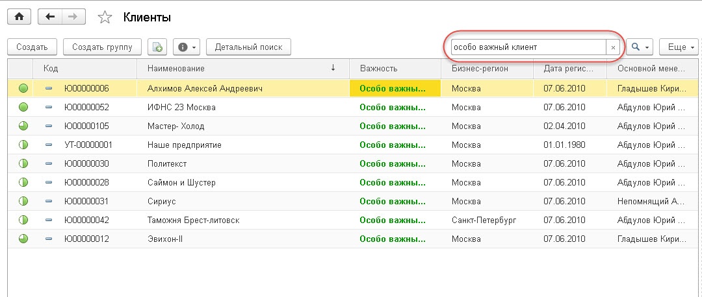
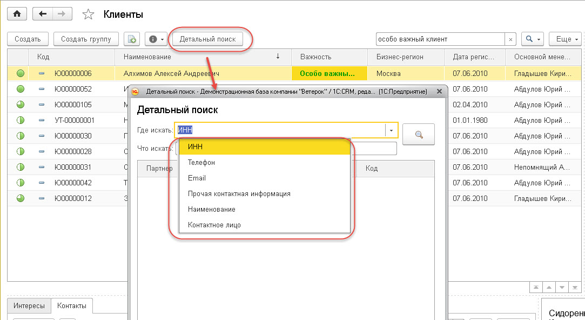

Ведение истории взаимоотношений с клиентами, регистрация новых клиентов.
Ведение истории взаимоотношений с клиентами, регистрация новых клиентов.Ведение истории взаимоотношений с клиентами, регистрация новых клиентов.
Ведение истории взаимоотношений с клиентами должно быть регламентировано. Также есть методы, как организовать данную работу более удобной и эффективной в повседневной работе. Под эффективной организацией работы с клиентами понимается организация личного времени менеджера. Методики по организации личного времени будут представлены в отдельном методическом руководстве Управление временем (тайм-менеджмент). Здесь же будут предложены рекомендации по организации работы непосредственно при общении с клиентами, а также правила регистрации новых клиентов в уже сформированной клиентской базе.
Для создания обращения к клиенту необходимо зайти в раздел Клиенты и выбрать команду Клиенты. В открывшейся форме списка клиентов произвести поиск клиента. Поиск может быть выполнен двумя способами:
· По одной из колонок в списке клиентов, например, по наименованию клиента (наиболее часто используемый поиск). Данный способ рекомендуется использовать в первую очередь, как наиболее быстрый. Для начала поиска достаточно курсором встать в нужную колонку списка клиентов и начать на клавиатуре вводить текст для поиска. В результате откроется форма поиска.

· Воспользоваться детальным поиском по: ИНН, телефону, e-mail, прочей контакной информации, наименованию, контактному лицу.

При выполнении поиска отображаются клиенты, соответствующие данным поиска. Для просмотра истории по клиенту достаточно позиционировать курсор на нужном клиенте. В результате будет доступна основная информация о клиенте, а именно: контактные лица и контактная информация, история общения с клиентом, его важные свойства (вхождение в сегменты).
Примечание: Поиск по всей информации, а не только по наименованию клиента, можно включить на точное соответствии или на вхождение части слова. Для этого нужно в поле поиска выбрать соответствующий вариант поиска и он будет применяться в дальнейшем.
Перед вводом новых клиентов необходимо сначала сделать общие настройки в решении и персональные настройки. Для указания общих настроек необходимо перейти в
раздел «Настройки» - «Клиенты и продажи» и указать флажок «Выполнять поиск дублей при записи клиента» и указать по каким параметрам нужно производить поиск дублей.
Примечание: Следует выбрать минимум «Наименование», «Email» и «Телефон», т.к. в сумме по этим данным будет возможно однозначно определить клиента в большинстве случаев.
Для указания персональных настроек необходимо перейти в раздел «Настройки» - «Администрирование» - «Настройки пользователей и прав» - «Пользователи», открыть карточку нужного пользователя и перейти в Персональные настройки, где на закладке «Настройки» установить напротив настройки «Использовать помощник ввода нового клиента» значение «Да». Это позволит при вводе нового клиента использовать специальный мастер.